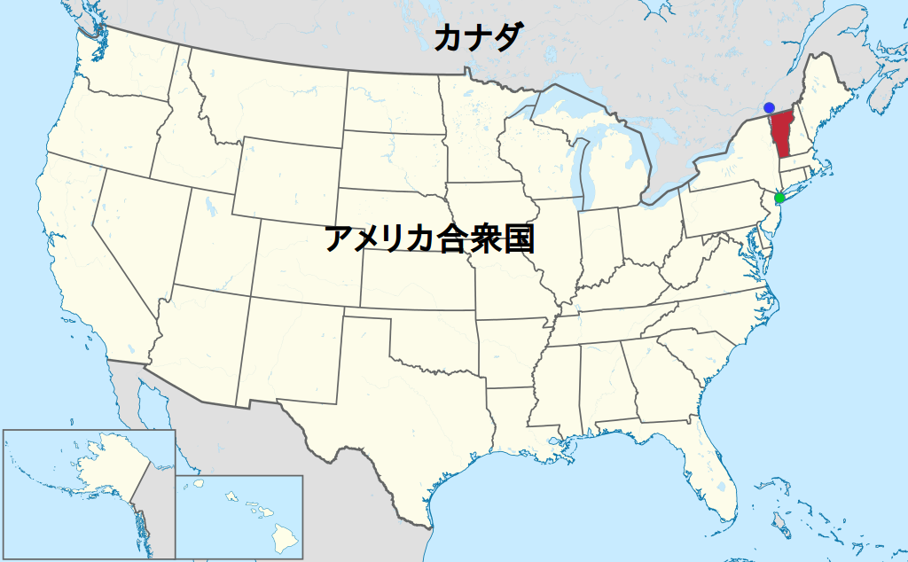
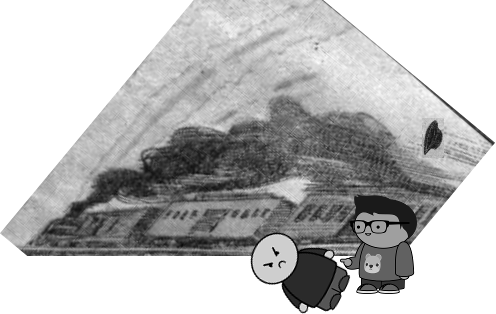

デイブ・ドイルの 最初 の事件
フィランダー・カムという男が、ベーカーズ 銀行 から10万ドルを持ちにげして、大さわぎになりました。
カムを 捕 まえた 者 には 高額 の 賞金 を出すとの 広告 を、 僕 は 新聞 で読んで、 僕 の 探偵業 の先生のブレイディさんに 相談 しました。
"そうだなあ"と先生は言いました。"もし君がやつを 捕 まえたとしても、 賞金 は 私 のものだよ。君は私にやとわれているんだからね。"
そんなふうには考えていませんでしたが、たしかにそのとおりです。
僕 は、「それなら、あなたのために 賞金 を手に入れたいんです」と言いました。
「 賞金 のことはまたあとで話すことにしようよ。私はいま手いっぱいなんで、君がこの 事件 をやってみないか。うまくいったら、けちなことは言わないから。」
「ほんとうですか」 と、僕は言いました。
「君はいずれ大きな 事件 に取りくまなければならないんだから、これは手はじめとしてはちょうどいいだろう。でも、この町のあらゆる 探偵 がさがしているんだから、君が 成功 する 可能性 は40分の1もないよ。」
「どうしたらいいでしょう」
「私に聞くんじゃない。自分で 計画 を立ててごらん」
「 鉄道 で 逃 げるんじゃありませんか？ 駅 で見はったらどうでしょう。」
「駅はたくさんあるぞ。いちどにどうやって全部を見はるのかね？それに、 船 もあるしな」と、先生は言い、しばらく考えたあと、こう言いました。
「カムはどこに住んでいる？」
「 新聞 によると、 彼 は 独身 で、以前は46 番街 に住んでいましたが、3 週間前 にその 部屋 を出たそうです。 出身 はバーモント 州 のミドルベリーだそうです。」
先生は 地図 を持ってきた。
「ミドルベリー 出身 なら、カナダのことはよく知っているだろう。逃 げるなら、きっと北へむかうはずだ。私が君だったら、グランド・セントラル 駅 に行って、 彼 に 似 た男が 今晩 か 昨晩 の 寝台 を 予約 していないか聞いてみるね。まず、グランド・セントラル駅に行って、 事務所 の人に私の 使 いだと言いなさい。」

北アメリカ地図 .
バーモント州(赤)、ニューヨーク市（緑丸）、モントリオール（青丸）.ニューヨーク市からモントリオールまでは約560 km. 東京〜大阪(約500 km)より少し遠い。
駅の 事務所 に行くと、すぐに 必要 な 情報 をくれました。でも、 僕 のまえにもう二人の 探偵 が 調 べに来ていたのでした。
「そいつは今夜、カナダのモントリオール行きの 特急 の10 番 の 寝台 を 予約 しているよ。でも、あんたのまえに二人、 探偵 が来て、このことはもう話してしまったよ。彼らはカムが寝台を予約したのはただの目くらましで、じつは、 昼 の 列車 のどれかに乗ると思っているんだ。」と、 事務所 の人が教えてくれました。
外に出ると、エド・ダフィーとピーズじいさんが立っていて、 僕 のことを 笑 っていました。二人とは、まえに先生のところで会ったことがあるのです。
帰って、このことを先生につたえると、先生は 笑 って言いました。
「だいじょうぶだよ。 連中 が待ちぶせしたって、カムは 捕 まりやしないよ。」
「え？カムはモントリオールに行くんじゃないんですか?」
「もちろん、行くつもりだろうさ。でも、グランド・セントラル駅で 切符 を買ったってことは、みんなが考えているのとはちがう道で行こうとしているってことさ。」
「じゃ、どうしようっていうんです?」
「知るもんか。ま、少し考えはあるがね。」
そして、先生は僕に、 銀行 に行くように言いました。カムが 行方 をくらますまえの 数週間 、どこに住んでいたのかを、さぐって来いというのです。
「でも、それこそ、ほかの 探偵 たちが 調 べようとして、 失敗 していることですよ。」
「いいから行って来い。なぜだか、君ならうまくできそうに思うよ。」
銀行 では 僕 がブレイディさんの 弟子 だというので、ていねいに 応 じてくれました。でも、やはり、カムがどこに住んでいたかは知らないとのことでした。
「ここに何かカムの持ちものは 残 っていませんか?」
僕がこんな 質問 を思いついて、口にすると、「いろいろありますよ」と 銀行 の 支店長 が言いました。「古いコート、古い 帽子 が二三、 傘 と、古い 靴 が二三足かな。」
見せてもらうと、なかにまだ新品の 帽子 がひとつありました。かぶった 形跡 がありません。
「この帽子は、店からここに送られてきたのか、それとも、カムが店からとってきたのか、どちらでしょう。」
「さあね。」というのが、 支店長 の答えでした。
僕は、 帽子 のうらに店の名前「シルバースタイン」を見つけ、その店にかけつけました。
ふつうに聞いてもどうせ追いはらわれるに決まっていると思ったので、ちょっと 策略 をめぐらしました。
僕は店にかけこんで、早口に「ブレイディさんがこの 帽子 を 誰 に売ったのかって聞いているぜ。おい、どうなんだ。」と、言いました。

シルバースタインは 帽子屋 なだけでなく、もぐりの 賭 けにもかかわっているという 噂 でした。それで僕はわざと、彼をおびえさせるような言い方をしたのです。
「ブレイディって？」
「 探偵 のブレイディさんだよ。」
シルバースタインは、なまりの強い英語で、「お兄さん。いちいち帽子を 誰 に売ったか、分かるわけないね？」と、言いました。
「ブレイディさんは、あんたが 帽子 を売った相手を全部 教 えろっていうんじゃないんだぜ。この 帽子 を 誰 に売ったのかってことよ。」
シルバースタインはその帽子を手にとり、ねんいりに 調 べ、そしておもむろにこう言いました。「この帽子、売ったのは、まえからお 馴染 みのカムさんね。」
「そうだ、そうだ。それをどこにとどけた？それともカムが持って帰ったのかい。」
「私が 送 ったよ。」と、シルバースタインは言います。僕はいらいらしてきたのですが、つづいてこうたずねます。
「だから、どこに送ったんだ？」
「ブルックリンに」
「いったいブルックリンのどこに？」
彼はノートを見て、ロッカウェイ 通 りのある 番地 を言いました。ロッカウェイ通りというのは、そのころ、東ニューヨークとよばれていた 地域 です。家らしい家はほとんどなくて、ガチョウやヤギ、ブタがたくさんいるような土地でした。今は少しはマシになったのですが、あのころは、たとえただで家を 貸 してくれたとしても、とても住む気になれないような 場所 でした。
さて、東ニューヨークに行くまえに、 僕 はまずブレイディさんと話しました。
先生は「君は正しい 方向 に進んでいる」と、言ってくれました。「行って来い、 幸運 を 祈 る 。 風向 きによっては、自分の手でカムを 逮捕 してみるかい？」
「やつが、にげようとするなら、ただごとではすませませんよ」と、僕は言いました。
「行け!」と、先生は言いました。「 結果 が出るまでここには 戻 って来るんじゃないぞ。」
しかし、 帽子 を送った家の 住所 が分かったからといって、カムを見つけられるとは 限 りませんでした。
東ニューヨークに行く 途中 、もし自分がカムだったとしたら、どうするだろうかと 僕 は考えました。
わざわざ 危険 をおかしてまで家にもどったりするだろうか？
ここからロング・アイランド 鉄道 に乗って、グリーンポートまで行き、ニュー・ロンドンに 渡 って、そこからノーザン鉄道でモントリオールに 直行 すればいいんだ。きっとそうだ。考えれば考えるほど、そうだと思えるのでした。
「1ドル 賭 けてもいい！」と、思いました。「セントラル駅で 寝台 を取ったのは、ブレイディ先生が言ったとおりに、目くらましだった。カムはもうカナダに 逃 げてしまった、まちがいない。」
しかし、 僕 はそのままカムの家まで行きました。
あそこまで 寂 れた家ならびというのは、生まれて初めて見ました。
十 数軒 が一 列 にならんでいました。 窓 はどれもわれていて、ドアは 蹴破 られ、一、二 箇所 では 近所 の人たちが 薪 にするために 塀 を持ちさってしまっていました。
その中で人が住んでいたのは二 軒 だけで、そのうちの一 軒 が 探 していた家でした。
僕は 震 えながら、ドアをノックしました。
出てきた女に、僕は、「おくさん。カムさんの 帽子 です。 シルバースタインさんの 店 から来ました。1ドル 払 ってください」と、言いました。
女は、「そんな金、ないよ！」と 怒 ったように言い、でも、 急 におびえたような顔に 変 わりました。
「何を言っているのかわからないわ 」と彼女は言う。「そんな名前の人はここにはいないよ。家をまちがえたんじゃないの」。
僕 は中に入ろうとしたのですが、女が 僕 をさえぎりました。
「おし入ろうたってだめさ 嘘 と 帽子 を持って、とっとと出ていきな。」
「シルバースタインさんはこの家に 帽子を送ったことがあるのですよ。 だまそうとしても、だまされませんよ。」
彼女は僕の 面前 で、ぴしゃっとドアを閉めました。
しかたなく 庭 を出ようとした時、上の 窓 でブラインドが少しゆれる音がしました。
見あげると、ブラインドのすきまから男の顔がこちらを見ていたのです。
「あのー、これはあなたの 帽子 ですか？」 僕は大声でさけびましたが、その顔は消えてしまいました。
僕はもう一度、誰にでも聞こえるような大きな声で叫びました。
「これを持ち帰るくらいなら、そのへんに 捨 てちまうぞ。」
そして、わざと、たけり 狂 ったように 歩 き出しました。
「あいつだ！」 僕 は心の中で思いました。「あれはカムだ。」
なぜ分かったかって？
説明 できないが、わかったのです。まさにあの 瞬間 から、カムがあの家にいるということに 疑 いの 余地 はないと思いました。
そして、僕の思ったとおりでした。 僕 が何をしたか、お話しましょう。
僕はまずハワード・ハウスに行きました。そこは、あのころ、ロングアイランド鉄道の 列車 が 発着 していた 場所 です。 時刻表 を見ました。夜八時半にグリーンポート行きの 列車 があることがわかりました。もう、六時近くになっていました。
僕はカムの家にもどって、見はりました。
僕は、ある時は、 家並 みのはずれまで行って、人のいない家にかくれました。また、ときには、ハワード・ハウスとのあいだに 陣取 りました。カムがいずれ出てくると 確信 していたからです。
八時十五分ごろ、 僕 は 木 かげに 隠 れてやつの家のドアを見ていました。その時、 突然 、「あいつは 裏口 から出て、あき地を 横 ぎるんじゃないか」と、 閃 きました。
僕は 通 りを走って、家のうしろを見わたせる 場所 に立ちました。
あんのじょうでした。
男が、大きなコートで目まですっぽりとかくし、黒い 革 の手さげかばんを持って、 駅 のほうに 裏 の 空 き地を歩いていくのでした。
カムか?
そうかもしれないし、ちがうかもしれない。あの家から出てきたのかどうかも分からない。
僕は 速足 で男を 追 いました。
すると、男は 不安 になったのか、ますます早く歩きだします。僕は、それではやはりカムのやつなんだなと思いました。
「やつがグリーンポート行きの 切符 を買ったら、捕 まえることにしよう」と、僕は自分に言いきかせました。
それほど大きな男ではなかったし、僕は 腕力 には 自信 があったので、こわくはありませんでした。
「あんなやつなら、二人ぐらいいたって 簡単 さ。」
そう思い、 探偵 バッジをコートの 内側 につけました。まわりの人たちが 間違 って 僕 をつかまえようとしたら、見せられるようにしたのです。
そのころには、ハワード・ハウスにかなり近づいてたのですが、ハワード・ハウスと駅のあいだの右まえのほうに、 空 の 貨車 がたくさんとまっていました。
男はその 貨車 の 片側 を 急 ぎ、 僕 は 反対側 を行きました。ところが、僕がプラットホームについた時には、彼の 姿 は 消 えてしまっていたのです。
「まかれた」と、思いました。
僕は、 車両 の 反対側 にまわってみました。しかし、男の 姿 はありません。どこにも見あたりません。その時の僕の 気分 といったら、東ニューヨーク一 番 の 病人 になったかのようです。
貨車 の中に 隠 れたのか？
そう思って見に行こうとした、そのとき、 列車 がゴーッと入ってきたのです。
それは折りかえし 列車 でした。 到着 すると、またすぐ、来た方にもどって行くのです。
僕 はどうしたらいいのか分かりませんでした。
車掌 は 全員乗 ってくださいと 叫 んでいたし、一 分 一 秒 の 猶予 もありません。
列車 は、空 の 貨車 のすぐそばまで来ていたので、乗りこむのは 簡単 でした。
「きっと、カムは 貨車 から飛びうつったんだ。」
僕は、自分が立っている場所に一番近い 車両 に飛びのり、列車の中をずっと、かけて行きました。
列車が発車しました。彼はその車両にも、次の車両にもいません。
僕は、 完全 にまかれてしまったのではないかと思いはじめました。なぜなら、 最後尾 の 車両 まで来ても、カムの 姿 はなかったからです。
僕 はホームに飛びおりようと心に決めて、 全力 で 車内 を走りぬけました。いちばん 後 ろのドアをあけようとしたとき、ふと目のまえで、 貨車 の 車両 の一つから男がホームに飛びおりるのが見えました。
僕はドアをあけ、 一瞬 にしてホームに出た。男は 僕 を見ると、ピストルをだして、つっ込んできました。
「くそくらえ! 生きては、つかまらないぞ」と、男が 叫 ぶ。
が、僕は 彼 のピストルを 一撃 ではじき飛ばす。
「助けて! 人ごろし！」と、カムはさけびながら、プラットホームを 逃 げていく。
僕 は 彼 の 喉 をつかんで、たおした。すると、そこに飛びこんできた二人の男が、 僕 につかみかかる。

「こいつは 泥棒 だ! 泥棒 〜！」と、カムは 叫 びます。
「ちがう、僕は 探偵 だ。こいつは銀行の金を持ち 逃 げした 犯人 だ！」と、僕はできるだけ 冷静 に言いました。
取りしらべてみると、カムは、やはり、グリーンポート行きの 切符 と、ノーザン・ニュー・ロンドン 鉄道 の 時刻表 を持っていました。あの夜、ブレイディ氏が私を東ニューヨークに行かしてくれなかったら、きっとカムはモントリオールまで 逃 げおおせていたでしょう。
以上 が、僕 の 最初 の 事件 の 顛末 です。
{kind=link}
{kind=link}
{kind=link}
{kind=link}
{kind=link}